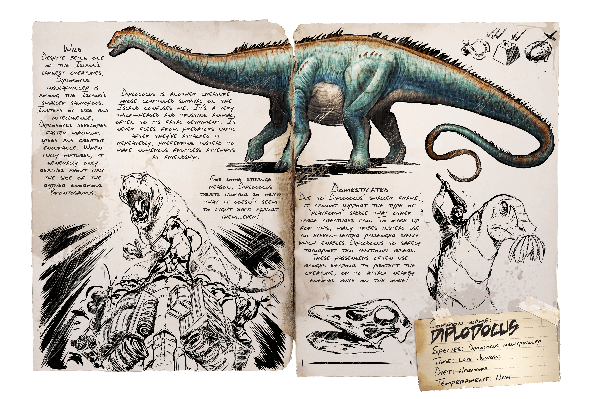

Primera aparición: Temporada 2 - capítulo 4
Tamaño (adulto): Longitud - 25 metros, Altura - 4 metro
Hábitat: LA ISLA, EL CENTRO, VALGUERO, RAGNAROK, FJOLDUR, GENESIS
Dieta: Herbívora
Comportamiento: Territorial
Nivel de amenaza: Baja, evitar si es posible
Nivel de pelea: 570